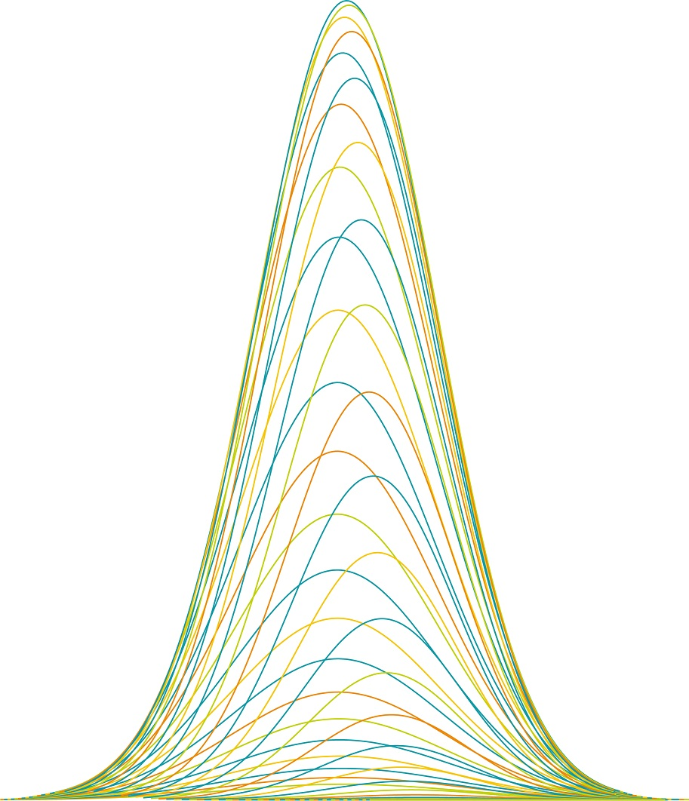

R-INLA is a powerful R package designed to perform fast, approximate Bayesian inference for Latent Gaussian Models. This platform is your gateway to cutting-edge methodological developments, tools, and resources centered around INLA.
Explore the institutions and research groups citing INLA worldwide. Zoom and hover on the interactive map to see where the method is making an impact.
Open the interactive map →